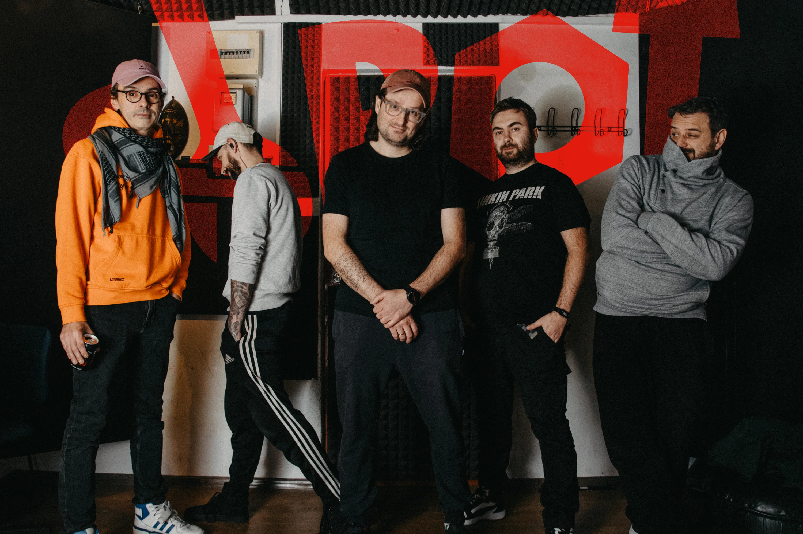
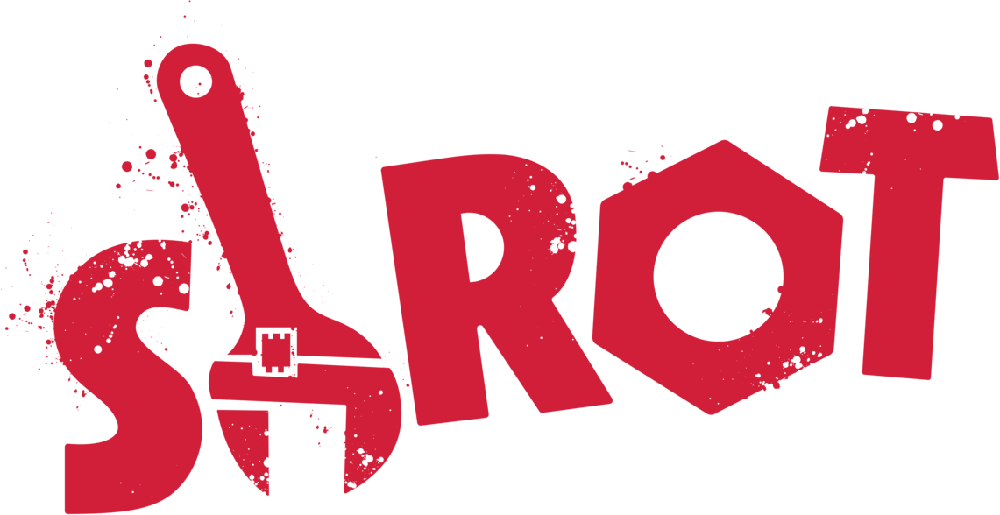

Brud, hałas i czysta punkowa energia prosto z garażu.
ShROT powstał w 2005 roku — jako zespół, który zawsze był tragicznym wyborem. Tym kochanym, ale odkładanym „na potem”. Przez prawie 20 lat zakopani w warszawskim podziemiu robiliśmy swoje: bez planu B, bez kalkulacji, bez kompromisów. ShROT dojrzewał, koncertował, zbierał historie i brzmienia, żeby w końcu wydać na świat dwie płyty z pogranicza alternative, rocka i punka.
Sami piszemy teksty, sami komponujemy, bo nikt nie obieca Ci tyle ile możesz sam popsuć. ShROT to zderzenie pięciu różnych charakterów, temperamentów i pomysłów na hałas. Konfrontujemy się i wykuwamy z tego nasze brzmienie. Kochamy scenę, ludzi pod nią i wszystko, co się dzieje pomiędzy. Koncert to wspólna jazda i energia. Dla nas liczy się dobra zabawa, autentyczność i chaos kontrolowany. Reszta to detale.
"Sami piszemy teksty, sami komponujemy, bo nikt nie obieca Ci tyle ile możesz sam popsuć."
— SHROT
Odpal swój ulubiony odtwarzacz i daj czadu. Jesteśmy dostępni na wszystkich najważniejszych platformach streamingowych. Kliknij ikonę i dodaj nas do playlisty!
Chcesz zobaczyć, jak trzęsie się scena? Wpadaj na najbliższe koncerty! Poniżej znajdziesz aktualny rozkład jazdy.